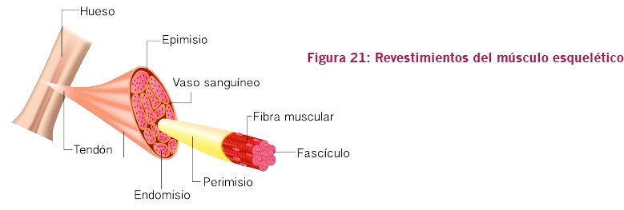

01. Anatomía y Fisiología
C. Sistema muscular
Revestimientos del músculo esquelético
Los músculos son revestidos por un tejido protector externo, denominado epimisio, dentro del cual existen los llamados fascículos musculares (Figura 21). Cada fascículo muscular representa un conjunto de hasta 150 fibras musculares (células musculares – miocitos). El perimisio, a su vez, es una vaina de tejido conjuntivo que protege cada fascículo, ya que cada fibra muscular, también está cubierta por el mismo tipo de revestimiento, denominado endomisio.
